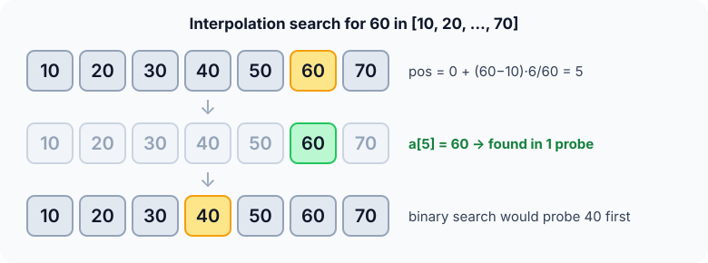

Prerequisites
- Binary search: interpolation search changes only how the probe is chosen.
- Proportions: "60 is 5/6 of the way from 10 to 70".
- Integer division in C.
The analogy
Everyday analogy
Looking up "Williams" in a paper phone book, you don't open it in the middle. You open it near the end, because W is near the end of the alphabet.
Interpolation search does the same with numbers. It estimates where the target should be from its value, and probes there instead of at the middle.
How it works
Data requirement: the array must be sorted, and the values should be roughly uniformly distributed for the speed-up.
Start with one search by hand
Look for 60 in [10, 20, 30, 40, 50, 60, 70] (indices 0 to 6). Guess first, then open "Check".
Example: predict before you read
Step 1. How far is 60 from 10 to 70? Predict the fraction.
Check
$(60 - 10) / (70 - 10) = 50/60 = 5/6$.
Step 2. Cover the next line and guess: 5/6 of the way along indices 0..6 is which index?
Check
$0 + \frac{5}{6} \times 6 = 5$. Probe index 5.
Step 3. a[5] is 60. Predict: how many probes did binary search need here?
Check
Binary search probes 40, then 60: 2 probes. Interpolation used 1.

Quick recall: Before reading further, cover the text above and say out loud: what is the only difference between interpolation search and binary search?
Check your answer
How the probe position is picked: from the target's value instead of always the middle. Shrinking the range afterwards works the same way.
Finish the picture: a bad case
Now look for 6 in [1, 2, 3, 4, 5, 6, 1000]. The values are not evenly spread.
- First probe. 6 is $5/999$ of the way from 1 to 1000. Predict the index.
Check
$0 + 5 \cdot 6 / 999 \approx 0.03$, so index 0. a[0] = 1 is too small, so
lobecomes 1. - Next probes. The 1000 keeps dragging the estimate to the left edge. Predict how many probes in total.
Check
It probes index 0, 1, 2, 3, 4, then 5: 6 probes, one step at a time, like linear search.
Quick recall: Without scrolling up, say out loud: why did the 1000 make the search so slow?
Check your answer
The estimate assumes values grow evenly. One huge value makes every small target look like it's at the very start, so each probe only moves one step.
The rule in plain words
Estimate where the target should be: as far along the range as the target is between the first and last values. Probe there.
If it's the target, done. Otherwise shrink the range to the correct side, exactly like binary search, and estimate again.
Quick recall: Before you read the code, write the three steps of one round in your own words. Then check below.
Check your answer
1. Work out how far the target is between the smallest and largest values in the range. 2. Probe the same fraction of the way along the indices. 3. Stop if found, otherwise keep the side that can still contain it.
The code
Read this code after you have done one search by hand. It will make more sense.
int interpolation_search(const int a[], int n, int x) {
int lo = 0, hi = n - 1;
while (lo <= hi && x >= a[lo] && x <= a[hi]) { /* x must be in range */
if (a[hi] == a[lo]) /* avoid dividing by 0 */
return a[lo] == x ? lo : -1;
int pos = lo + (int)((long)(x - a[lo]) * (hi - lo) / (a[hi] - a[lo]));
if (a[pos] == x) return pos;
if (a[pos] < x) lo = pos + 1;
else hi = pos - 1;
}
return -1;
}Definition
What you just did, in one line: interpolation search is binary search with the probe placed by linear interpolation between a[lo] and a[hi], instead of at the middle.
flowchart TD
A["lo = 0, hi = n - 1"] --> B{"lo <= hi and a[lo] <= x <= a[hi] ?"}
B -->|no| F["Return -1"]
B -->|yes| C["pos = estimate from the value of x"]
C --> D{"compare a[pos] with x"}
D -->|equal| E["Return pos"]
D -->|"a[pos] < x"| G["lo = pos + 1"]
D -->|"a[pos] > x"| H["hi = pos - 1"]
G --> B
H --> B
How fast is it?
Quick recall: Before looking at the formula, predict: what happens to the estimate if the values are perfectly evenly spaced?
Check your answer
It lands exactly on the target, as with 60 in our example, so one probe is enough.
The probe position is a straight-line estimate between the two ends of the range:
$$\text{pos} \;=\; lo + \frac{(x - a[lo]) \cdot (hi - lo)}{a[hi] - a[lo]}.$$On uniformly spread values, the expected number of probes is $O(\log \log n)$. On skewed values, like the 1000 example, each probe may move only one step: $O(n)$.
| Best | Average (uniform) | Worst | Extra space | Data requirement |
|---|---|---|---|---|
| $O(1)$ | $O(\log \log n)$ | $O(n)$ | $O(1)$ | Sorted, roughly uniform |
Warning
If a[hi] == a[lo], the formula divides by zero. Also check that x lies between a[lo] and a[hi], or pos can land outside the array.
Exam tip
The two numbers to remember are $O(\log \log n)$ on uniform data and $O(n)$ in the worst case. Always state the uniformity assumption when you quote the fast one.
Common mistakes
- Forgetting the
a[hi] == a[lo]check, which divides by zero on runs of equal values. - Computing
(x - a[lo]) * (hi - lo)inint, which can overflow on large values. - Quoting $O(\log \log n)$ without saying it only holds for uniformly distributed data.
Try it yourself
Exercise 1 (warm-up)
In [0, 10, 20, 30, 40, 50, 60, 70, 80, 90, 100], where is the first probe for 30?
Hint
30 is 30% of the way from 0 to 100, and the indices run from 0 to 10.
Answer
$0 + 30 \cdot 10 / 100 = 3$. a[3] = 30: found in one probe.
Exercise 2 (a bit harder)
Search for 45 in [10, 20, 30, 40, 50, 60, 70]. List every probe until the search ends. Write your answer down before you open it.
Show answer
First probe: $0 + 35 \cdot 6 / 60 = 3.5$, which integer division makes 3. a[3] = 40 < 45, so lo becomes 4. Now 45 < a[4] = 50, so 45 is out of range and the loop ends: −1 after 1 probe.
Did you know?
Did you know?
Interpolation search was described by W. W. Peterson in 1957, almost as early as binary search itself. People already did it by hand with dictionaries.
It's worth knowing because real data is often close to uniform, such as IDs, timestamps or sorted random keys. There it can beat binary search, especially when each probe is a slow disk read.
Key points to remember
If you remember one thing from each line, remember the because.
- It probes near the target because it assumes values grow evenly from
a[lo]toa[hi]. - It is $O(\log \log n)$ on uniform data because each good estimate shrinks the range far more than halving does.
- It is $O(n)$ in the worst case because skewed values can make every probe move just one step.
- It needs a zero-division guard because equal end values make the denominator zero.
- Extra space is $O(1)$ because it only keeps
lo,hiandpos.
Self-check questions
Answer these in order, out loud. They follow the page, so your answers become the script of your video.
- How is interpolation search like using a phone book?
Sample answer
You open the book near where the name should be, near the end for "Williams", instead of in the middle. Interpolation search estimates the position from the value the same way.
- Walk through a search for 60 in [10, 20, …, 70].
Sample answer
60 is 5/6 of the way from 10 to 70, so probe 5/6 of the way along indices 0..6: index 5, which holds 60. One probe.
- Why does the code check
a[hi] == a[lo]before computingpos?A good answer names the operation that fails.
Sample answer
The formula divides by
a[hi] - a[lo]. If both ends are equal, that's division by zero, so we handle that case separately. - So what is interpolation search, in one sentence?
Sample answer
It's binary search on sorted data where the probe position is estimated from the target's value instead of always being the middle.
- Why can it be as slow as linear search?
A good answer uses the [1, 2, 3, 4, 5, 6, 1000] example.
Sample answer
When values are skewed, like one 1000 among small numbers, the estimate keeps landing at the left edge. Each probe then moves only one step, so it degrades to $O(n)$.
- What are its best, average and worst cases?
Sample answer
Best $O(1)$, average $O(\log \log n)$ on uniformly distributed data, worst $O(n)$. Extra space $O(1)$.
- When would you choose binary search instead?
Sample answer
When you don't know how the values are distributed, or they are clearly skewed. Binary search guarantees $O(\log n)$ no matter what.
- If you had to teach this to a friend in 2 minutes, what would you leave out, and why?
Sample answer
I'd leave out the overflow cast and the $\log \log n$ derivation. I'd keep the phone-book analogy, the one-probe example, the skewed example, and "fast on even data, $O(n)$ on skewed data".
External resources
- GeeksforGeeks: Interpolation search: an article with code and the probe formula.
- Wikipedia: Interpolation search: history and complexity analysis.
Videos
- YouTube search: interpolation search explained: pick a short walkthrough.